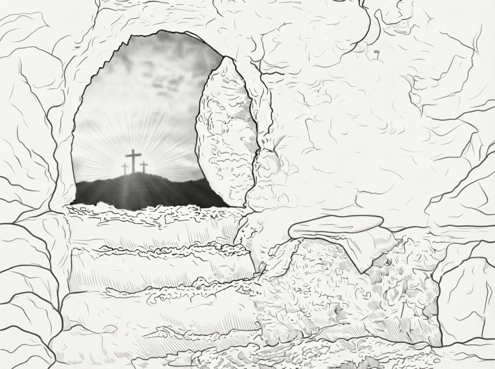
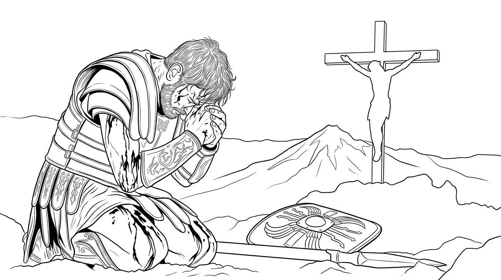

第 8 章，共 12 章
祂從死裡復活了

在日落前，他們從十字架上，放下我的主人的身體。
有一位名叫約瑟的門徒到彼拉多那裡，要了我主人的身體。他和幾個幫手清洗了我主人身上的血跡和傷口，並用厚重的白色亞麻布將它包裹起來，然後安置在一個新的墳墓。
洞穴入口的旁邊，有一塊比人還高的大圓石。那個大圓石比洞口高一點點，用來封閉入口。他們把它放在墳墓的石床上，出來。然後幾個人合力滾下那個大石頭。
入口就封閉了。一支羅馬小隊前來守衛這座墳墓。
羅馬士兵都是一起行動，從不單獨行動。每個士兵帶著頭盔，穿著金屬盔甲。他們手持標槍、短劍和盾牌。
幾個不想離開主人的女人們，就遠遠地留在墳墓外面。
那些反對主的人，向彼拉多報告說，耶穌預言祂三天後會復活。所以，他們請求彼拉多吩咐士兵保護墳墓，不要讓耶穌的門徒來墳墓偷祂的身體，然後假裝說耶穌復活了。
我親眼目睹我的主人死了。
祂的追隨者也親眼目睹祂死了。
士兵們確定祂死在十字架上，所以才把祂的身體取下來。
你們反對主的人，這麼努力地防備祂，難道你比我們更相信我的主人會死裡復活嗎？
我漫無目的地飛。
飛到了我主人過去常常說話和行走的地方。
當我飛靠近一個窄門，我注意到窄門上有一段主的話，是從前主的門徒們寫在上面的：
「凡勞苦擔重擔的人，
可以到我這裡來，
我就使你們得安息。」
那些話，給主人的門徒很大的安慰。
如果我的主人能忍受這種難以忍受的痛苦，祂就可以安慰任何經歷過或將要經歷這種痛苦的人。
森丘里也慢慢走到窄門下面，靠著坐下休息。他低著頭，沉默了很久。
「全地都因人而受到詛咒。」他的聲音很低。
「人的罪孽，重得我們自己都背不起。」他又沉默了一會兒，雙手抱著自己的頭。
「我們是全地的重擔，這地一刻也容不下我們。」
他抬起頭，看著天空。他的眼睛裡滿是疲憊。
「現在，我們甚至殺死了上帝的兒子。」
他的聲音開始顫抖。「我們怎麼逃脫將來的審判以及神的憤怒？」
他說完以後，很久沒有再說話。過了一會兒，他靠著窄門，疲倦地睡著了。
我在旁邊看著他。我不知道該對他說什麼。所以，我就飛回了山崖頂上。

破曉時分，我還沒有看見太陽。天空卻先亮了。那光從墳墓的方向升起。一道光柱從地上直通天空。
光柱越來越明亮。整個墳墓彷彿都被光籠罩。忽然，我看見無數的天使大軍從光柱中降下。
他們裂天而降，整齊地來到墳墓前。一場猛烈的地震隨之而來。一名天使士兵將巨石滾到一邊。
有兩個天使進入墳墓，等候主人。其他大隊的天使整整齊齊地站在墳墓外等候。
墳墓裡滿是光。然後，我看見我的主人站在那裡。那些裹著祂身體的亞麻布，仍然留在石床上。
我的主人站起來了。光從祂身上發出。那光越來越明亮，最後甚至比太陽光更加耀眼。我的眼睛幾乎無法直視祂。
我不敢相信我所看見的。我昨天親眼看見祂死在十字架上。我看見祂低下頭。我看見祂斷了氣。
可是現在，祂站在墳墓裡，祂活著。我的主人活著。祂對在墳墓外面等候的天使們說：
「我還要去見一個人。」
祂吩咐那兩個領頭的天使軍官留下，其餘的天使都整齊地退回天際。
抹大拉的馬利亞從一棵樹後面出來，哭著跑到墳墓前。她往墳墓裡看，看到了兩個白色的天使，但主人不在了，她看見了主人，卻以為祂是園丁。她痛哭流涕，說：
「他們把我主帶走了，我不知道他們把祂放在哪裡。」
我的主人用熟悉的語氣，呼喚著她的名字：
「馬利亞。」
她的眼睛猛地睜開，認出了主人。
原來，我的主人所說的那一個人，就是抹大拉的馬利亞。我的主人對她說：
「不要拉住我，因為我還沒有升上去見我的父。」
「你往我弟兄那裡去，告訴他們說我要升上去見我的父，也是你們的父；見我的神，也是你們的神。」
抹大拉的馬利亞，無法相信她所看到的。她的臉上充滿了欣喜若狂的淚水。她連忙跑過去，把這一切都告訴了其他的門徒們。她一邊跑，一邊不停地喊：
「祂還活著！祂還活著！」
我也興奮地飛在她的上空，因為我也看到了，我的主人是如何復活的。
當她跑到村子附近告訴其他門徒的時候，我的腦海裡想起還坐在窄門口上的森丘里。
森丘里不知道我的主人已經死而復活。他不知道昨夜他所害怕的審判，已經不一樣了。我決定轉身去告訴他這個好消息。
我飛到了窄門上面，森丘里還沒有醒來。我用尖銳的叫聲把他吵醒。他大概明白我有重要的事情要對他說。他站起來，跟在我的後面。我飛著，把他引到抹大拉的馬利亞和其他門徒所在的地方。我飛在前面。森丘里跟著我。他還不知道我要帶他去哪裡。
可是我知道。我要讓他知道，我看到榮耀。我的主人還活著。